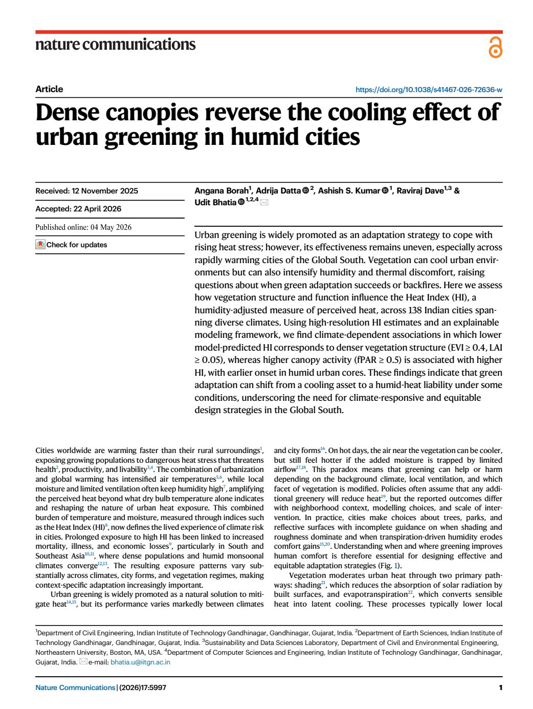
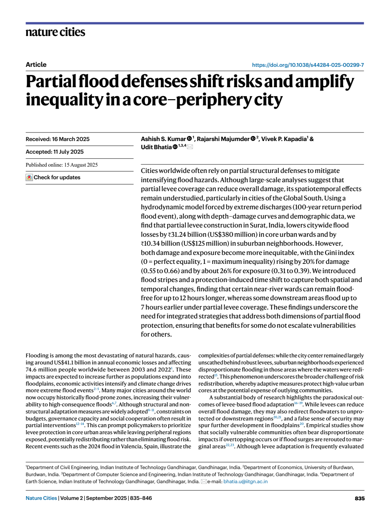
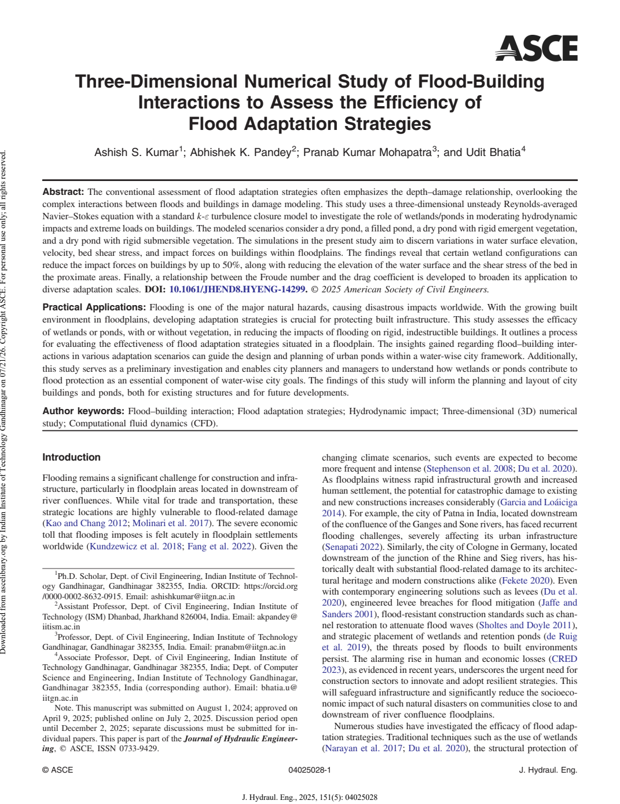

First page ↗Dense canopies reverse the cooling effect of urban greening in humid cities.
Borah, A., Datta, A., Kumar, A. S., Dave, R., and Bhatia, U.
Nature Communications, 17, 5997.

First page ↗Borah, A., Datta, A., Kumar, A. S., Dave, R., and Bhatia, U.
Nature Communications, 17, 5997.

First page ↗Kumar, A. S., Majumder, R., Kapadia, V. P., and Bhatia, U.
Nature Cities, 2, 835–846.

First page ↗Kumar, A. S., Pandey, A. K., Mohapatra, P. K., and Bhatia, U.
Journal of Hydraulic Engineering, 151(5), 04025028.